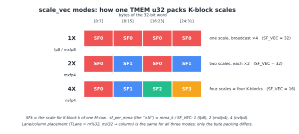

Tensor Core 数据布局的演进#
概览
Ampere 的
mma.sync从 warp 内各 thread 的寄存器中读取 A、B 和 C，计算结果 D 也保存在寄存器中。Hopper 的
wgmma.mma_async可以通过 matrix descriptor 直接读取 shared memory 中的输入，累加器仍由各 thread 的寄存器持有。Blackwell 的
tcgen05.mma将累加器移入 TMEM；block-scaled MMA 使用的 scale factors 也存放在 TMEM 中。
从数学上看，三代 Tensor Core 做的事情没有改变，都是矩阵乘加：
其中，A、B 是相乘的两个矩阵，C 是传入的累加项，D 是输出结果。公式没有告诉我们这些矩阵存放在哪里，也没有说明 Tensor Core 按什么顺序读取它们。
这正是本章要讨论的问题。Tensor Core 指令会按照固定的硬件规则来解读寄存器、shared memory 地址或 TMEM 坐标。某个元素一旦放错位置，指令就会把它当成另一个矩阵元素参与计算，最后得到错误结果。
下面我们将按照 Ampere、Hopper、Blackwell 的顺序，追踪三代架构中的数据路径，并分别考察三个相同的问题：MMA 从哪里读取输入？累加结果保存在哪里？kernel 如何描述指令要求的 layout？描述具体映射时，我们会继续使用“数据布局”一章引入的记号。
先记住两项访存要求#
在看具体指令之前，先回顾 layout 设计还要满足的两项要求。数据从 global memory 搬运时，一个 warp 访问的地址应尽量合并成少量连续且对齐的 memory transactions。访问 shared memory 时，地址还要尽量分散到不同 banks，避免 bank conflict。
加上 Tensor Core 自身的布局要求，一个 kernel 的 layout 实际上要同时通过三项检查：global memory 访问是否合并、shared memory 访问是否产生 bank conflict，以及每个元素是否位于 MMA 指令规定的位置。前两项已经在前文介绍，下面集中讨论第三项。
Ampere：寄存器中的操作数与累加器#
先看 Ampere。它常用 mma.sync.aligned.m16n8k* 系列指令执行 Tensor Core 矩阵乘加。mma.sync 从寄存器中取得 A、B 和 C，计算得到的 D 也写回寄存器。
一条 mma.sync 由整个 warp 协同执行。A、B 和 C/D 矩阵 tile 会按照 PTX 规定的方式，分散到 warp 中 32 个 threads 的寄存器里。每个 thread 只持有 tile 的一部分，这一部分称为该 thread 的 register fragment；把 32 个 threads 持有的部分合在一起，才得到完整的矩阵 tile。
因此，Ampere kernel 在执行 MMA 前，通常先把 A 和 B 暂存到 shared memory，再用 ldmatrix 把它们装入正确的 thread 寄存器，组成 mma.sync 需要的 fragments：
SMEM --ldmatrix--> registers
registers --mma.sync--> registers
registers --普通 store--> SMEM 或 GMEM
mma.sync 执行时，唯一重要的就是各寄存器中的内容。上面是高性能 kernel 最常见的数据路径；其他 load 或寄存器操作也可以准备这些值。
一个具体的 fragment 映射#
接下来以 mma.sync.aligned.m16n8k16 为例，看看一个矩阵 tile 的元素如何分配到 warp 中 32 个 threads 的寄存器里。这里令 A 为 row-major、B 为 column-major，A/B 使用 fp16 或 bf16，C/D 使用 fp32。整个 warp 共同计算：
每个 thread 的 lane ID 决定它持有 A、B、C 和 D 中的哪些元素。先从最容易观察的 C/D 累加器开始。
观察 PTX 规定的映射，可以发现它每 4 个 lanes 重复一次：lanes 0–3 负责第 0 行和第 8 行，lanes 4–7 负责第 1 行和第 9 行，后面的 lanes 依次类推。因此，可以把 32 个 lanes 分成 8 个连续的 4-lane groups。记当前 lane 的 ID 为 \(l\)，并定义：
整数除法得到 group 编号 \(g\)，取余得到 lane 在 group 内的位置 \(t\)。
第 \(g\) 个 group 共同负责输出 tile 的第 \(g\) 行和第 \(g+8\) 行。group 内第 \(t\) 个 lane 负责这两行中的第 \(2t\) 列和第 \(2t+1\) 列。因此，每个 lane 持有四个 fp32 累加值，其逻辑坐标为：
例如，lane 5 对应：
所以它持有 C/D 中的四个元素：
A fragment 使用相同的 \(g\) 和 \(t\)，但此时坐标表示的是 \((m,k)\)。每个 lane 持有 8 个 fp16 或 bf16 元素，每两个元素打包在一个 32-bit register 中：
换成矩阵坐标来看，该 lane 在 \(m=g\) 和 \(m=g+8\) 两行中，各持有 K 低半区和高半区的一对相邻元素。
B fragment 的坐标表示为 \((k,n)\)。每个 lane 持有 4 个 fp16 或 bf16 元素，同样每两个元素打包在一个 32-bit register 中：
到了 B fragment，\(g\) 决定 \(n\) 坐标，\(t\) 与 register 编号共同决定 \(k\) 坐标。
现在把这组坐标换成前一章的 layout 记号。C/D 前 8 行形成一个 8×8 的局部模式，可以写成：
S[(8, 4, 2) : (4@laneid, 1@laneid, 1@reg)]
三个维度依次表示：
(row, column_pair, element_in_pair)
其中，相邻两列组成一个 column_pair，element_in_pair 表示元素在这一列对中的位置。因此，矩阵坐标 (row, col) 对应的 atom 坐标是：
(row, col // 2, col % 2)
前两个坐标确定 lane ID，最后一个坐标确定该 lane 内的 fragment slot：
lane_id = row·4 + col // 2
slot = col % 2
以刚才 lane 5 持有的 (1,2) 和 (1,3) 为例，它们的 atom 坐标分别是 (1,1,0) 和 (1,1,1)，因此都映射到 lane 1·4+1=5，并分别存放在 slot 0 和 slot 1 中。
完整的 C/D fragment 在 M 方向上包含两个这样的局部模式。这里抽出 8×8 atom 是为了方便描述布局，硬件执行的仍然是一条完整的 mma.m16n8k16 指令。
ldmatrix：从 shared memory 构造 fragment#
上面已经知道 mma.sync 需要什么样的 register fragment。接下来的问题是：A、B 已经放在 shared memory 中，怎样一次把它们送到正确的 thread 寄存器？Ampere 为此提供了 ldmatrix。下面讨论它的 .m8n8.b16 形式：
ldmatrix.sync.aligned.m8n8.x1.shared.b16
ldmatrix.sync.aligned.m8n8.x2.shared.b16
ldmatrix.sync.aligned.m8n8.x4.shared.b16
这组指令由整个 warp 协同执行。.x1、.x2 和 .x4 分别加载 1、2 和 4 个 8×8 矩阵块。对于第 m 个矩阵块的第 r 行，起始地址由 lane m·8+r 提供。因此，.x1 使用 lanes 0–7 提供地址，.x2 使用 lanes 0–15，.x4 使用全部 32 个 lanes。
下图展示的是 .x1。图左侧的 T0–T7 分别提供八行的起始地址，但“提供地址”和“接收数据”是两回事：加载得到的 64 个元素会分发给全部 32 个 threads。lane \(l\) 接收：
row = l // 4
cols = 2·(l % 4), 2·(l % 4) + 1
例如，第 0 行的八个元素会分配给 lanes 0–3：lane 0 接收 columns 0–1，lane 1 接收 columns 2–3，以此类推。每个 lane 接收的两个 fp16 元素会打包到一个 32-bit register 中。图左侧画的是地址由谁提供，图右侧画的是数据最终由谁持有。反向箭头表示 Hopper（sm_90）加入的 stmatrix，它把 register fragment 写回 shared memory。
可选的 .trans 修饰符会以 column-major 方式加载每个 8×8 矩阵块。如果不使用 ldmatrix，kernel 也可以通过普通 loads 和寄存器操作构造 fragment，但需要自己完成这套跨 lane 的数据分发。

Blackwell：累加器进入 TMEM#
TMEM 中的累加器#
到了 Blackwell，输入侧延续了 Hopper 的做法：tcgen05.mma 通过 descriptor 找到 shared memory 中的 A、B，并按照 descriptor 指定的布局读取它们。某些模式也允许 A 来自 TMEM。
而最主要的变化在于累加器的存放位置。Hopper 将 C/D 保存在各 thread 的寄存器中；Blackwell 则把它们放进 Tensor Memory，也就是 TMEM。等到 epilogue 需要处理结果时，再通过 tcgen05.ld 将数据加载到寄存器中：
A/B in SMEM --tcgen05.mma--> C/D in TMEM
C/D in TMEM --tcgen05.ld--> register fragment --store--> GMEM
tcgen05.mma 会异步执行。发出指令后，kernel 要先等待 MMA 完成，epilogue 才能通过 tcgen05.ld 读取结果。tcgen05.ld 本身也是异步的；在使用目标寄存器前，还需要执行 tcgen05.wait::ld。这里的读写布局必须相互匹配：tcgen05.mma 把结果写到哪些 TMEM lane/column，tcgen05.ld 就要从对应位置取出数据，并将它们分配到各 thread 的寄存器中。
Block-Scaled MMA 的 Scale Factors#
上一章的 TMEM 中 Scale Factors 的跨 Warp 广播 已经用 M=128、SFK=4 的例子，推导了 scale factors 在 TMEM 中的打包和 .warpx4 replication。现在沿着数据路径继续往下看：这些值怎样进入 TMEM，MMA 又怎样选中当前需要的几个 bytes。
Block-scaled MMA 需要两组 scale factors：
SFA(M, SFK)
SFB(N, SFK)
SFA[m,sfk] 用于缩放 A 第 m 行、第 sfk 个 K-scale block 的元素；SFB[n,sfk] 对 B 的第 n 列做同样的缩放。这里沿用上一章的逻辑索引顺序；PTX 表格把同一个 B 侧矩阵写成 SFB[sfk,n]，shape 为 SFB_M x N。
A 和 B 通常由 TMA 加载到 shared memory，再由 MMA 直接读取。Scale factors 需要进入 TMEM，而 TMA 的搬运路径只到 shared memory，所以中间还要经过一次 tcgen05.cp：
A, B: GMEM --TMA--> SMEM --tcgen05.mma--> Tensor Core
SFA, SFB: GMEM --TMA--> SMEM --tcgen05.cp--> TMEM --tcgen05.mma--> Tensor Core
tcgen05.cp 如何写入 TMEM#
先回忆上一章得到的完整 layout：
S[(4, 32, 4) : (4@TCol, 1@TLane, 1@TCol)]
+ R[4 : 32@TLane]
其中，S[...] 把 (Mgroup, lane, sfk) 映射到 TMEM 中的 byte 位置。在带有数据类型的 TIRx layout 中，@TCol stride 以 buffer element 为单位。这里每个 scale factor 占 8 bits，因此逻辑 TCol 位置为 4*Mgroup+sfk；每四个连续位置打包进一个 32-bit hardware TCol cell。等价地，hardware_TCol=(4*Mgroup+sfk)//4，byte_in_word=(4*Mgroup+sfk)%4。
R[...] 表示沿 TLane 轴复制四份。tcgen05.cp 的 .32x128b.warpx4 形式正好完成这件事：先写入一个 32-lane window，再把同一份数据广播到另外三个 warp windows。
scale_vec 的 Word 内复制#
数据已经放进 TMEM，接下来还要看一个 32-bit TMEM word 内部如何排列 scales。scale_vec 决定 SFA 每行或 SFB 每列包含 1、2 还是 4 个逻辑 scales。为了填满 4-byte word，较短的 scale vector 会在 word 内重复：
scale_vec::1X: [SF0, SF0, SF0, SF0]
scale_vec::2X: [SF0, SF1, SF0, SF1]
scale_vec::4X: [SF0, SF1, SF2, SF3]
SFA_ID 或 SFB_ID 则告诉 MMA 该读取哪一个副本。1X 可以选择 byte offset 0、1、2 或 3；2X 可以选择 offset 0 或 2，也就是低 half-word 或高 half-word；4X 使用全部 4 bytes，因此 ID 必须为 0。
这里的 word 内复制与前面的 R[4 : 32@TLane] 是两件事：前者复制 32-bit word 中的 bytes，后者把数据复制到四个 TMEM lane windows。而一个 scale 会被它所在 K-block 内的每个 K 元素共用，这是第三件事，与前两者都不同。

三代架构中的 Per-Thread Register Fragment#
把三代架构放在一起看，矩阵数据都会在某些阶段以 register fragment 的形式分布到各 thread 的寄存器中。Fragment 的具体 shape 和映射由相应指令决定。
在 Ampere 上，ldmatrix 从 shared memory 加载数据，并构造 mma.sync 读取的 register fragment。
在 Hopper 上，wgmma 将累加结果写入 register fragment，交给 epilogue 继续处理。
到了 Blackwell，计算期间的累加器存放在 TMEM 中；epilogue 开始前，tcgen05.ld 再把结果加载成 register fragment。
因此，register fragment 在三代架构中承担着不同角色。Ampere 和 Hopper 在计算期间用它保存累加器；Blackwell 则主要在 TMEM 与 epilogue 的交界处使用它。前面介绍的 m8n8-style atom 是一个常见例子；tcgen05.ld 和 tcgen05.st 还支持其他 data-movement shapes。
三种数据路径的对比#
架构 |
主要 MMA 指令 |
A/B 主要来源 |
累加器位置 |
Shared-memory layout 如何表达 |
|---|---|---|---|---|
Ampere |
|
registers |
registers |
kernel 通常手写地址计算和 swizzle |
Hopper |
|
A 可来自 registers 或 SMEM；B 来自 SMEM |
registers |
matrix descriptor 记录 strides 和 swizzle mode |
Blackwell |
|
主要来自 SMEM；某些 A 模式可来自 TMEM |
TMEM |
descriptor 描述 SMEM 输入，TMEM layout 另行描述累加器和 scale factors |
三代对照来看，这条演进脉络就很清晰了：Ampere 先把输入整理成 per-lane register fragments；Hopper 让 Tensor Core 通过 descriptor 直接读取 shared memory；Blackwell 再把累加器和 scale factors 移入 TMEM。
写 kernel 时，可以顺着数据流逐段检查：上一条指令把数据写成什么排列，下一条指令就要用什么 layout 或 descriptor 去读。只要中间有一处解释不一致，Tensor Core 就可能读错元素；即使结果仍然正确，也可能因为访存方式不合适而损失性能。